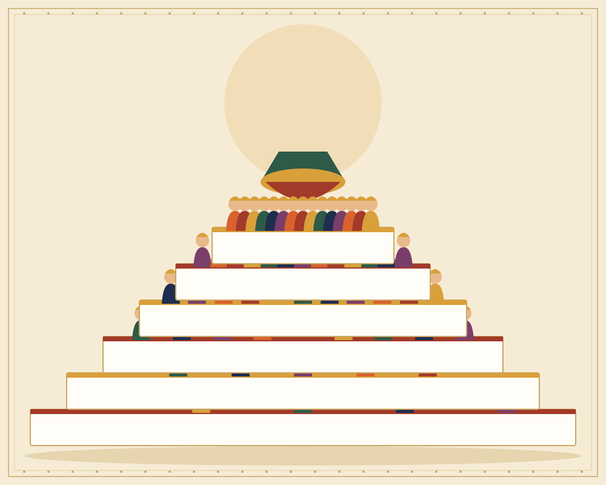

Navaratri · South India
Golu
Welcome. This is a small collection of stories told through the dolls and figures of Golu, the festive display that brings Navaratri into the home.

What is Golu?
Golu, also called Kolu or Bommai Golu, is a tradition from South India that is observed during Navaratri, the festival of nine nights. Families arrange dolls and figurines on a set of steps, often covered with white cloth, to create a display that can be viewed from the front.
The steps are usually built in an odd number, such as three, five, or seven. Each tier holds a different group of figures. Some are deities and mythological characters, some are animals, and some are everyday scenes such as a market, a village, or a garden. Together they form a kind of picture book that rewards slow looking.
Navaratri honours the goddess in her many forms and celebrates the triumph of good over evil. The festival closes on the tenth day, Vijayadashami. Golu is set up for the nine nights, and many families begin with a prayer and a lamp each evening.
Golu is also a time for community. Families invite neighbours, relatives, and children to visit the display. Guests are offered sweets and small gifts, and songs are sung. Storytelling passes from older family members to younger ones as the figures are explained, so the tradition lives on from one generation to the next.
Explore the stories
Each story is told through a figure or scene from the display.